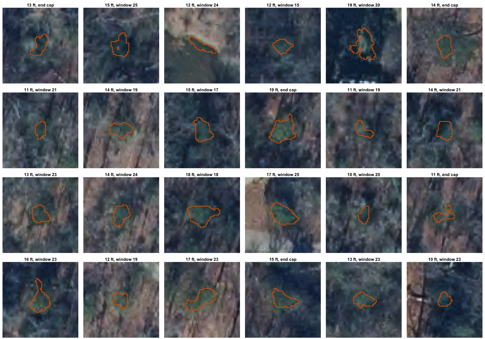

American holly (Ilex opaca) is evergreen, so in leaf-off imagery (flown February to March 2025) its crowns stay green while the deciduous canopy around it is bare. This page builds the first step of a holly classification workflow:
Candidates from imagery (this page): find small, isolated evergreen crowns in non-developed areas.
Ground truth: visit candidate locations and record what is there (holly, sex if known, or the false-positive species).
Classification: train a supervised classifier on crown features (and NDVI once the 4-band imagery arrives) using the field labels, then map holly across the transect.
Step
Script
Output
7. Crown extraction
R/06_holly_objects.R
data/derived/holly_objects.gpkg (all crowns with features)
The current imagery is RGB only, so greenness comes from the green leaf index (GLI). When the 4-band imagery arrives and the mosaic is rebuilt with a nir band, veg_index() switches to NDVI automatically; only the NDVI thresholds in config.yml need calibrating.
Approach
Each 12-inch tile is processed at full resolution:
Vegetation index (GLI (green leaf index, RGB)), smoothed with a 3 × 3 px mean.
Crowns: pixels with index > 0.05 are evergreen crown; connected groups of them are crown objects. Objects 6–30 ft across (equivalent-circle diameter) are kept with their features.
Isolation: the share of evergreen pixels (index > 0.02, a lower threshold) in the 70 ft neighbourhood of each crown. Holly in a leaf-off hardwood stand has a low share; a crown inside pine canopy has a high one.
Candidate rule: crown 10–20 ft across, evergreen share ≤ 0.25, and NLCD class not water or developed (11, 21, 22, 23, 24). Crowns cut by a tile edge are excluded from the field list.
Thresholds were set by inspecting forest chips at 17.5 and 22.5 km: GLI in pine canopy has a median near 0.03, leaf-off hardwood near −0.02.
Example
A 600 × 600 ft area 22.5 km along the transect: a pine stand (upper left) next to leaf-off hardwoods (lower right). Candidates are the isolated crowns in the hardwood stand; crowns inside the pine canopy are rejected as not isolated.
Of 177,671 evergreen crowns 6–30 ft across in the study area, 9,405 pass the candidate rule (the outcome is the first rule a crown fails). Zoom in on the map to see individual candidates over the imagery; click one for its id and features.
Candidate density per km² of non-developed land (NLCD classes other than 11, 21, 22, 23, 24) in each 1 km window, with the window’s forest cover for reference.
Code
nondev <- classes |>filter(!class %in% h$exclude_nlcd) |>group_by(window) |>summarise(nondev_frac =sum(frac))dens <- windows |>st_drop_geometry() |>left_join(nondev, by ="window") |>left_join(count(st_drop_geometry(cand), window, name ="n"), by ="window") |>left_join(select(nlcd, window, forest_pct), by ="window") |>mutate(n =coalesce(n, 0L),nondev_km2 = area_km2 * nondev_frac,per_km2 =ifelse(nondev_km2 >0.05, n / nondev_km2, NA))plot_ly(dens, x =~u_mid_km) |>add_bars(y =~per_km2, name ="Candidates per km² non-developed",marker =list(color ="#d95f02"),customdata =~sprintf("%d candidates in %.2f km²", n, nondev_km2),hovertemplate ="%{y:.0f} per km² (%{customdata})<extra></extra>") |>layout(xaxis =list(title ="Distance from Richmond (km)", dtick =5),yaxis =list(title ="Candidates per km²"),hovermode ="x unified", showlegend =FALSE) |>config(displaylogo =FALSE)
Candidate gallery
A random sample of candidates, 60 × 60 ft around each crown (outlined), for a quick visual check of what the rule picks up.
Code
set.seed(2025)ortho <-load_ortho(aoi =FALSE)samp <- cand[sample(nrow(cand), min(24, nrow(cand))), ]par(mfrow =c(4, 6), mar =c(0.2, 0.2, 1.2, 0.2))for (i inseq_len(nrow(samp))) { ctr <-st_coordinates(st_centroid(st_geometry(samp[i, ]))) x <-crop(ortho, ext(ctr[1] -30, ctr[1] +30, ctr[2] -30, ctr[2] +30))plotRGB(x[[1:3]], mar =c(0.2, 0.2, 1.2, 0.2))plot(vect(samp[i, ]), add =TRUE, border ="#d95f02", lwd =1.5) where <-if (is.na(samp$window[i])) "end cap"elsesprintf("window %d", samp$window[i])title(sprintf("%.0f ft, %s", samp$diam_ft[i], where), cex.main =0.8, line =0.2)}

Crown features
Features recorded for every crown, compared between candidates and crowns rejected as not isolated (mostly crowns within pine or other evergreen canopy). These are the starting inputs for the classifier.
The field list is data/derived/holly_candidates.csv (with a GPX copy for GPS units and phone apps). Each row has the crown id, latitude and longitude, transect position, crown diameter, and the features used by the rule. Suggested field record per visited candidate:
Field
Values
obj_id
crown id from the list (or new id for holly found nearby but not listed)
species
Ilex opaca, or the false positive (e.g. eastern red cedar, pine, magnolia, privet, ivy-covered trunk, lawn)
sex
female (fruit), male, unknown
dbh_cm, height_m
optional size measures
notes, photo
free text and photo id
Crown ids are tied to the current thresholds; if the rule or index changes, match field records to crowns by location rather than id. Keep field data outside data/derived/ (for example data/field/), since derived files are rebuilt by the scripts.
Next steps
Sampling design: a stratified random sample of candidates per window (or per NLCD class), so the field effort covers the full gradient.
Classifier: with field labels, fit a supervised model (e.g. random forest) on crown features, validated with spatially blocked cross-validation (hold out whole windows).
NDVI: when the 4-band imagery arrives, rebuild the mosaic, calibrate the NDVI thresholds, and add NDVI and NIR features. In leaf-off imagery NDVI should separate evergreen foliage from bare branches and dormant grass more cleanly than GLI.
Notes
Expected false positives: other evergreens of similar size, such as eastern red cedar, young loblolly or Virginia pine, southern magnolia, and evergreen shrubs (privet, Elaeagnus, mountain laurel), plus green ground cover such as winter grass or English ivy on trunks.
What is missed: holly under evergreen canopy (hidden), crowns smaller than 10 ft, holly in developed areas (excluded by design), and crowns merged with neighbouring evergreens into one larger object.
Shadows: the imagery has long shadows in places; shaded crowns may fall below the index threshold.